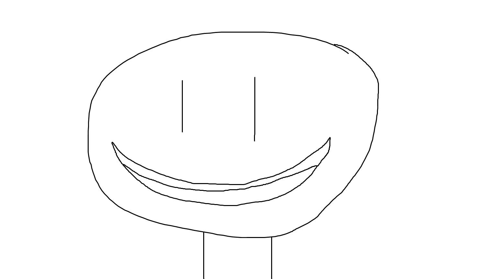

Mis see leht on?
See veebileht on koostatud Tarkvara Arendusprotsessi tunni raames. Siit leiab minu õppematerjalid, praktilised tööd, projektid ja lingid erinevatele alamlehtedele. Leht on ümber kujundatud tehisintellekti abiga, kasutades tumesinist IT-stiilis kujundust.
Tarkvara Arendusprotsess
Selles osas on teemad, mis on seotud tarkvara arendamise planeerimise, dokumenteerimise ja protsessi kirjeldamisega.
Praktilised rakendused
Siin on minu praktilised veebirakendused, mis on tehtud õppimise käigus.
Interaktiivne slaider
See osa lisab lehele JavaScriptiga tehtud interaktiivsust.
IT organisatsiooni juhtimine ja taristu
Selle aine all õppisin IT korraldust, taristut ja seda, kuidas tehnoloogiat organisatsioonis kasutatakse.
Vaata, mida ma selles aines õppisinKes ma olen?
Minu info
Minu nimi on Henry Kuningas. Ma õpin nooremaks tarkvaraarendajaks ja tegelen koolis erinevate veebilehtede, rakenduste ja andmebaaside projektidega.
See ainemapp näitab minu tehtud töid ja arengut tarkvaraarenduse õppimisel.
Ava minu GitHub| Nimi | Asukoht |
| Henry Kuningas | Tallinn |
|
 |
|
Tehisintellekti kasutamine
Selle lehe kujundamisel kasutasin tehisintellekti abi. Tehisintellekt aitas parandada kujundust, lisada tumesinise teema, Comic Sans fondi, külgmenüü, slaideri, animatsioonid ja parema ülesehituse.